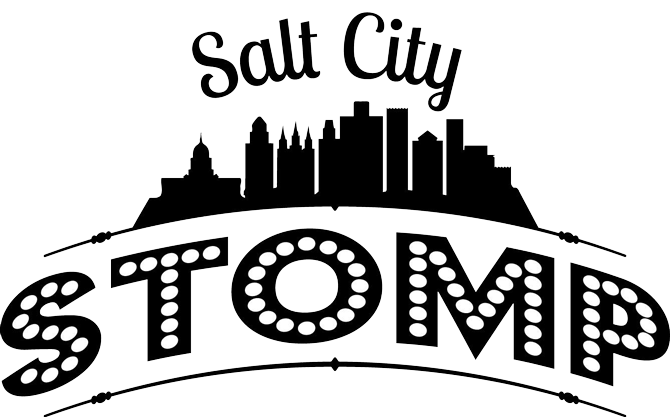

Stomp it off with the best of them here at Salt City Stomp! Three nights of dancing, two days of workshops, and one grand ol' time! Whether you're new to Big Band Swing, or swung out with Frankie himself, we've got something for you. We focus on Lindy Hop, but include Balboa and Collegiate Shag, Blues and Soul.
Join us May 3-5, 2019, for our inaugural event! While this may be our first event, we are taking up the torch of Swingin' On Main's events of Lindy Con and ULX.